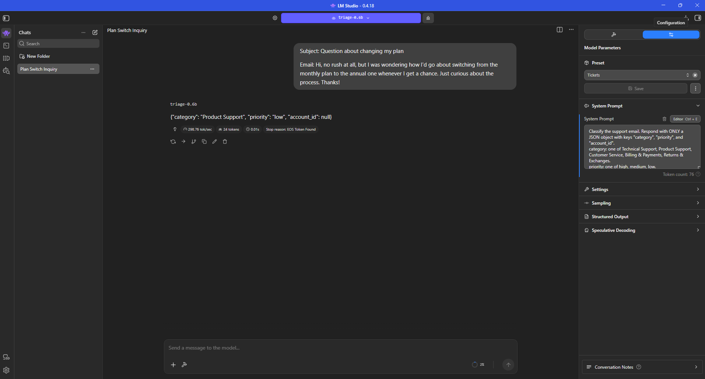

The inbox fills faster than anyone can sort it
It is Monday morning and the support inbox is full. Before anybody can fix anything, a person has to open each email and make three calls: which team owns it, whether it can wait, and which customer it is.
Sorting is slower than answering. While someone reads a polite question about invoices, an email saying the payment system is down waits its turn further up the list.
A large model in the cloud can do this sorting well, but it charges for every email and it needs your customers' messages sent off your machines to do it.
Watch one email turn from an essay into three fields
Press Play. Six steps, and you can go back at any point. This is the one before and after example written down in the repository, replayed here.
Subject: Question about changing my plan Email: Hi, no rush at all, but I was wondering how I'd go about switching from the monthly plan to the annual one whenever I get a chance. Just curious about the process. Thanks!
Copied from results/lm_studio.png, the screenshot stored in this repository. The same email is quoted in README.md.
One real support email. A customer asks how to move from the monthly plan to the annual one.
Nothing runs while you read this. The model itself is not in this repository, so every line in the walkthrough is copied out of a file that is, and each step names the file it came from.

Three things worth taking from that
- It answers in fields, not in sentences. All 1,200 test answers came back as a line a computer can read, both before and after training.
- The skill was not already in there waiting for a better prompt. Before training the small model was worse at judging urgency than a rule that ignores the email entirely. Training put the judgement in.
- It runs on one computer, with nothing sent anywhere. The screenshot above is the model answering inside a desktop app, with no cloud service involved.
Urgency went from worse than guessing to 87 in 100
All three numbers below were measured the same way: on 1,200 emails that were kept back and never used for training, counting an answer right only when it matched the answer key exactly.
Where the answers landed, before and after
Both tables cover the same 1,200 emails and are drawn at the same scale, so the squares can be compared directly. Down the side is the correct urgency. Across the top is what the model said. The brass line runs through the three cells where the two agree, so ink on the line is a right answer and ink off it is a wrong one.
Almost everything gets pushed into "medium", whatever the real urgency was.
The ink collects on the brass line. The answers and the truth mostly agree.
- The brass line: the model and the truth agree
- Right answers, area to scale
- Wrong answers, same scale
The column headed "none" holds answers whose urgency word was not one of high, medium or low. Before training there was one of those. After training there were none. That column is built that way by the scoring code in notebooks/02_train_and_eval.ipynb.
Show the same counts as a table
| Correct answer | said high | said medium | said low | said none | total |
|---|---|---|---|---|---|
| Before, high | 251 | 244 | 13 | 1 | 509 |
| Before, medium | 89 | 201 | 9 | 0 | 299 |
| Before, low | 67 | 317 | 8 | 0 | 392 |
| After, high | 434 | 74 | 1 | 0 | 509 |
| After, medium | 33 | 231 | 35 | 0 | 299 |
| After, low | 0 | 9 | 383 | 0 | 392 |
Six of the emails it was scored on, and the answers it was scored against
These are real rows from the set of 1,200. The right hand column is the answer key, so you can see what "exactly right" had to match. It is not this model's guess.
[1] Medical Data Encryption Failing Overnight The encryption of medical data failed during the night because of incorrectly set up Kubernetes cluster parameters. Although I have restarted the NAS system and reviewed Norton 360 logs, the problem is still ongoing. My account number is 88186. [2] Unexpected Excessive Billing Errors This Month Several subscriptions were overcharged at the same time due to a possible system glitch or synchronization issue. I have already contacted support and reviewed the invoices manually, but the problem remains unresolved. I would be grateful if you could look into this issue and provide a solution as soon as possible. [3] Website Loading Times Are Slow The agency's website is experiencing slow loading times. Recent software updates might have increased traffic, causing this issue. We have already cleared the cache and optimized the images, but the problem still persists. Please pull up account 11209. [4] Data Analytics Tools for Investment Optimization with Pluralsight Hello, I require details on data analytics tools that can be integrated with Pluralsight to optimize my investment. Could you please furnish a list of such compatible tools? For reference, my account ends in 94621. [5] Fehlgeschlagene MySQL-Verbindung Unser MySQL-System hat plötzlich eine Verbindungsschwerinheit. Es könnte sein, dass die Debian 10 Buster-Version bereits veraltet ist. Wir haben den Server neu gestartet und die Firewalld-Einstellungen überprüft. [6] Unterstützung für Docker Kontaktieren Sie uns, um mehr über die Optimierung mit Docker, die Datenaufbereitung und finanzielle Investitionen zu erfahren. Würden Sie mehr Informationen, Tutorials und Dokumentationen bereitstellen, um den Einsatz beginnen zu können? Ihre Unterstützung ist geschätzt, und wir würden gerne erfahren, wie Docker für Ihre Zwecke genutzt werden kann.
Six of the 1,200, from data/test_chat.jsonl (lines 18, 198, 35, 26, 9 and 19). The wording is untouched. Only the "Subject:" and "Email:" prefixes have been dropped. Some of the emails in this set are in German.
[1] {"category": "Technical Support", "priority": "high", "account_id": "88186"}
[2] {"category": "Billing & Payments", "priority": "high", "account_id": null}
[3] {"category": "Technical Support", "priority": "medium", "account_id": "11209"}
[4] {"category": "Product Support", "priority": "low", "account_id": "94621"}
[5] {"category": "Technical Support", "priority": "high", "account_id": null}
[6] {"category": "Product Support", "priority": "low", "account_id": null}
The matching six lines of the answer key, from data/test_labeled.jsonl. These were written by the larger model that built the key. They are the target, not a prediction by Triage-0.6B.
What it does not do
Four things this number does not cover
Written down here so nobody has to find them out later.
- It only knows five teams and three urgency levels, because that is the whole list it was shown. An email that belongs somewhere else has nowhere to go.
- The answer key was written by a larger model, not by a support team. 87.3% means it agrees with that larger model, which is not the same as being right.
- Pulling the account number out of the email is not covered by the 87.3% figure. That figure counts urgency only, and the account number was never scored.
- The emails are made up, not real customer traffic, and this is one training run with one random seed. Nobody has measured how much the result would move on a second run.
Six steps, start to finish
- Take a public collection of support emails, written in more than one language, and set aside 2,500 to learn from and 1,200 to test with.
- Have a large model read every email and write down the three fields. Those answers become the answer key. See the notebook that builds the key.
- Add a sentence stating an account number to about 7 emails in 10, so there is something real to pull out and the other 3 in 10 teach it to answer "none".
- Show the small model the 2,500 examples twice over, until it copies the shape of the answers. See the notebook that trains and scores it.
- Ask it the 1,200 questions it has never seen, and count how many answers match the key exactly. That count is the whole of the proof above.
- Save a compressed copy that opens in an ordinary desktop app, so it answers on one machine with nothing sent anywhere.